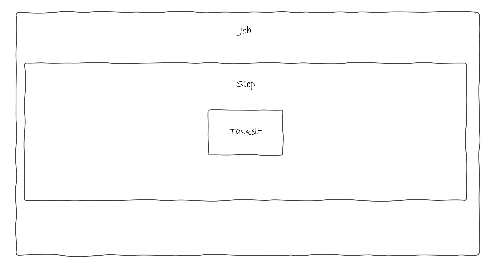

Limpieza - Spring Batch
Ya tenemos todo configurado de los pasos anteriores asi que proseguimos con el último ejemplo.
Caso de Uso
Este es un caso de uso nuevo para poner en práctica el uso de Tasklet.
¿Qué vamos a hacer?
Vamos a implementar un batch que limpie de ficheros un determinado directorio. Esta vez y dado que no necesitamos realizar ningún tipo de lectura ni trasformación ni escritura y queremos hacerlo todo al mismo tiempo, es buen momento para utilizar un Tasklet.
¿Cómo lo vamos a hacer?
A diferencia de los casos anteriores seguiremos el esquema de funcionamiento de tasklet de un proceso batch que hemos visto en la parte de introducción:

- Tasklet: Eliminará todos los ficheros del directorio.
- Step: El paso que contiene el tasklet que van a realizar la funcionalidad.
- Job: La tarea que contiene los pasos definidos.
Código
Tasklet
En primer lugar, vamos a crear CleanTasklet dentro del package com.ccsw.tutorialbatch.tasklet.
import java.io.File;
public class CleanTasklet implements Tasklet, InitializingBean {
private Resource directory;
public RepeatStatus execute(StepContribution contribution, ChunkContext chunkContext) throws Exception {
File dir = directory.getFile();
File[] files = dir.listFiles();
for (File file : files) {
boolean deleted = file.delete();
if (!deleted) {
throw new UnexpectedJobExecutionException("Could not delete file " + file.getPath());
}
}
return RepeatStatus.FINISHED;
}
public void setDirectoryResource(Resource directory) {
this.directory = directory;
}
public void afterPropertiesSet() throws Exception {
if (directory == null) {
throw new UnexpectedJobExecutionException("Directory must be set");
}
}
}
La implementación de la interface Tasklet consiste en sobreescribir el método execute de forma muy similar como lo hacíamos en los Processors. En este método emplazamos nuestra lógica de negocio que básicamente consiste en borrar todos los ficheros que se encuentren en el directorio proporcionado como atributo.
Step y Job
Posteriormente, como en el caso anterior, emplazamos la configuración junto al resto de beans dentro del package com.ccsw.tutorialbatch.config.
package com.ccsw.tutorialbatch.config;
import com.ccsw.tutorialbatch.tasklet.CleanTasklet;
import org.springframework.batch.core.Job;
import org.springframework.batch.core.Step;
import org.springframework.batch.core.job.builder.JobBuilder;
import org.springframework.batch.core.launch.support.RunIdIncrementer;
import org.springframework.batch.core.repository.JobRepository;
import org.springframework.batch.core.step.builder.StepBuilder;
import org.springframework.batch.core.step.tasklet.Tasklet;
import org.springframework.context.annotation.Bean;
import org.springframework.context.annotation.Configuration;
import org.springframework.core.io.FileSystemResource;
import org.springframework.transaction.PlatformTransactionManager;
@Configuration
public class CleanBatchConfiguration {
@Bean
public Tasklet taskletClean() {
CleanTasklet tasklet = new CleanTasklet();
tasklet.setDirectoryResource(new FileSystemResource("target/test-outputs"));
return tasklet;
}
@Bean
public Step step1Clean(JobRepository jobRepository, PlatformTransactionManager transactionManager, Tasklet taskletClean) {
return new StepBuilder("step1Clean", jobRepository)
.tasklet(taskletClean, transactionManager)
.build();
}
@Bean
public Job jobClean(JobRepository jobRepository, Step step1Clean) {
return new JobBuilder("jobClean", jobRepository)
.incrementer(new RunIdIncrementer())
.start(step1Clean)
.build();
}
}
- Tasklet: El bean del
Taskletque hemos creado anteriormente. - Step: La creación del
Stepse realiza mediante élStepBuilderal que únicamente le añadimos elTaskletque se va a ejecutar de forma atómica. - Job: Finalmente, debemos definir él
Jobque será lo que se ejecute al lanzar nuestro proceso. La creación se hace mediante el builder correspondiente como en los casos anteriores.
Pruebas
Ahora ya tenemos varios Jobs en nuestro batch por lo que debemos especificar en el arranque cuál queremos ejecutar.
Como en el caso anterior pasamos como VM option la siguiente propiedad en el arranque de la aplicación:
-Dspring.batch.job.name=jobClean
Hecho esto y ejecutado el batch, podremos ver la traza de la ejecución en nuestro log y que el fichero generado en el target del proyecto de la ejecución del batch de autores ya no está.
Job: [SimpleJob: [name=jobClean]] launched with the following parameters: [{'run.id':'{value=1, type=class java.lang.Long, identifying=true}'}]
Executing step: [step1Clean]
Step: [step1Clean] executed in 9ms
Job: [SimpleJob: [name=jobClean]] completed with the following parameters: [{'run.id':'{value=1, type=class java.lang.Long, identifying=true}'}] and the following status: [COMPLETED] in 23ms